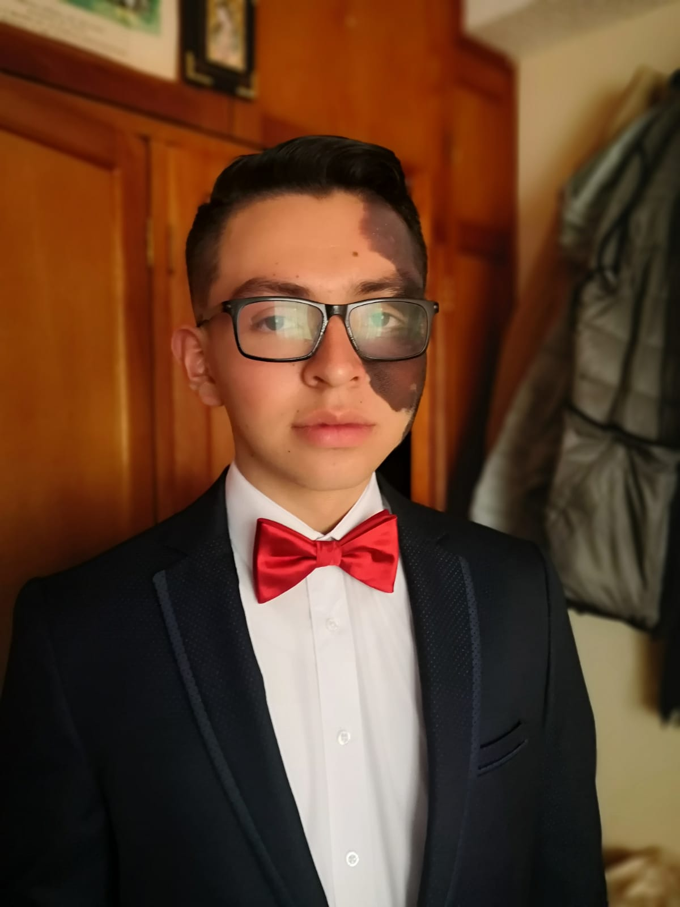
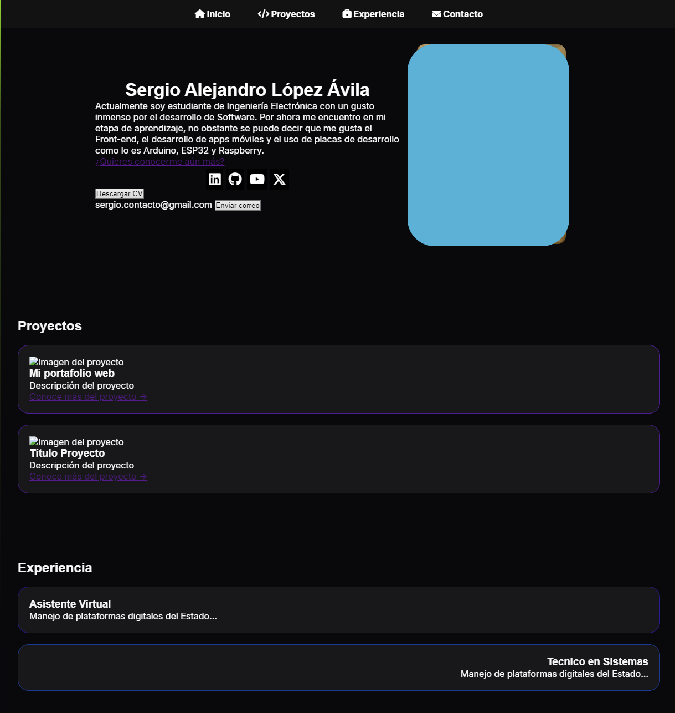

Sergio Alejandro López Ávila
Actualmente soy estudiante de Ingeniería Electrónica con un gusto inmenso por el desarrollo de Software. Por ahora me encuentro en mi etapa de aprendizaje, no obstante se puede decir que me gusta el Front-end, el desarrollo de apps móviles y el uso de placas de desarrollo como lo es Arduino, ESP32 y Raspberry.
¿Quieres conocerme aún más?sergio.contacto@gmail.com

Proyectos

Mi portafolio web
Se que colocar el propio portafolio no es muy agradable, pero es mi primer contacto con el Frontend.
Experiencia
Asistente Virtual
Manejo de plataformas digitales del Estado...
Tecnico en Sistemas
Manejo de plataformas digitales del Estado...